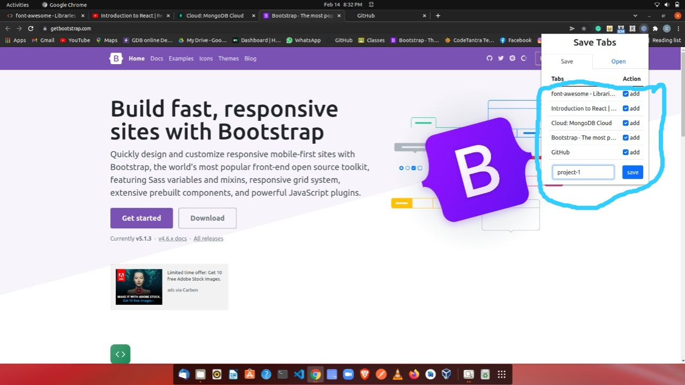
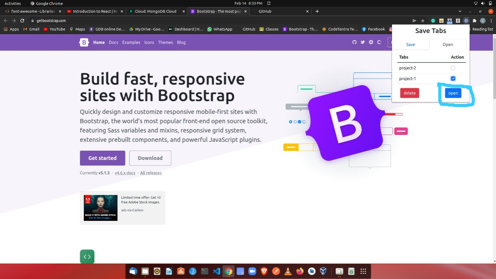
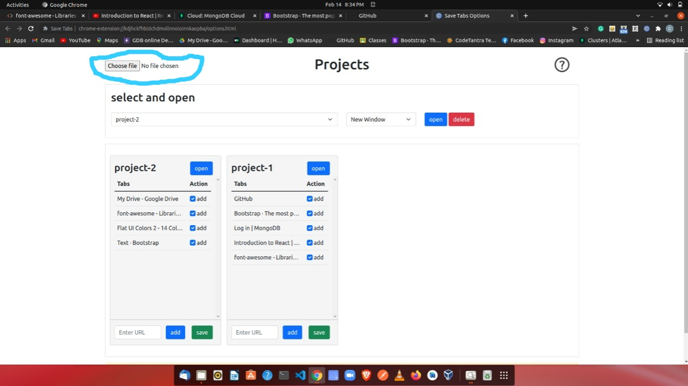
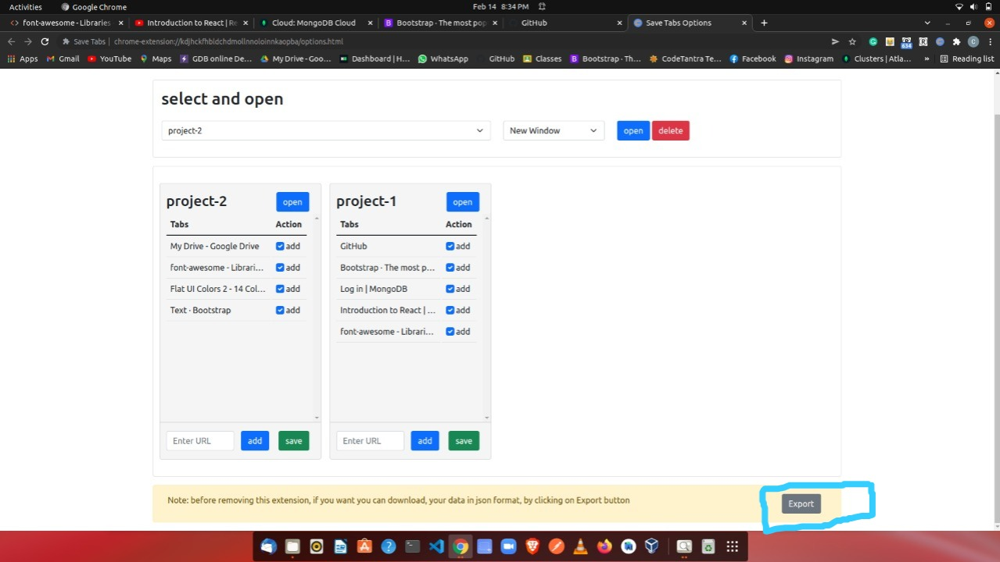

1. open popup page, select the tabs you want to save, name your project and click on save button

1. open popup page, select the projects you want to open, and click on open button

1. open popup page, select the projects you want to delete, and click on delete button

1. open options page, click on the choose file button on the top-left corner, select your json data file

1. open options page, click on Export button on the bottom-right corner, you will get one file with name savetabs.json
